Дизайн-среда с ИИ
Не промпты, а рабочая система. Собрал среду на Claude Code, где каждую задачу ведёт агент со своим сводом правил: собирает экран на ките дизайн-системы или макет в Figma, проверяет себя и только потом отдаёт результат.
- Роль
- Автор среды
- Формат
- Личная рабочая среда в git
- Инструменты
- Claude Code, Figma MCP, Storybook
- Доклад
- Закрытый митап Ozon
Доклад на митапе Ozon
Рассказал о среде на закрытом митапе Ozon с докладом «ИИ как сотрудник с регламентом»: почему агенту нужен не удачный промпт, а свод правил, роль и самопроверка, как у сотрудника на новом месте.
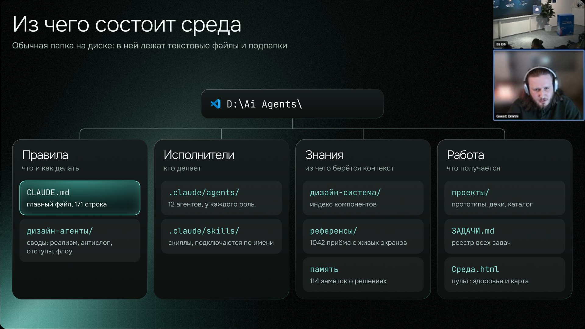
Что закрываю через среду
Рабочий HTML на ките дизайн-системы, а не картинка: можно кликать и показывать на тестах
Экраны в Figma из библиотеки, сценарии со стрелками, развилками и корнер-кейсами
Гайды интервью, обработка расшифровок и синтез: темы, инсайты и персоны на реальных данных
Бриф, JTBD, карта историй, OOUX и сценарии на доске FigJam
Аудит по эвристикам, реализму, отступам и приметам нейросети до показа команде
Постановка для разработки, понятная без наших исходников и прототипов
Переходы, раскрытия и состояния ожидания в прототипе, тайминги по своду
Деки на шаблонах компании с библиотекой фирменных иллюстраций
Посты для двух Telegram-каналов и обложки к статьям внутреннего блога
Подход
ИИ без правил выдаёт корректный, но никакой экран. Правила вычитают плохое, но силы не прибавляют, а типовые приметы нейронки видны сразу: индиго-акценты, эмодзи вместо иконок, стерильные данные. Поэтому я не пишу промпты под каждую задачу: знания живут в сводах, а работу ведут агенты, которые эти своды читают.
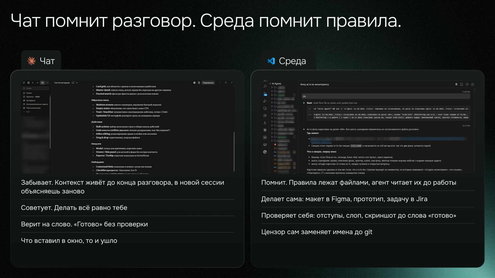
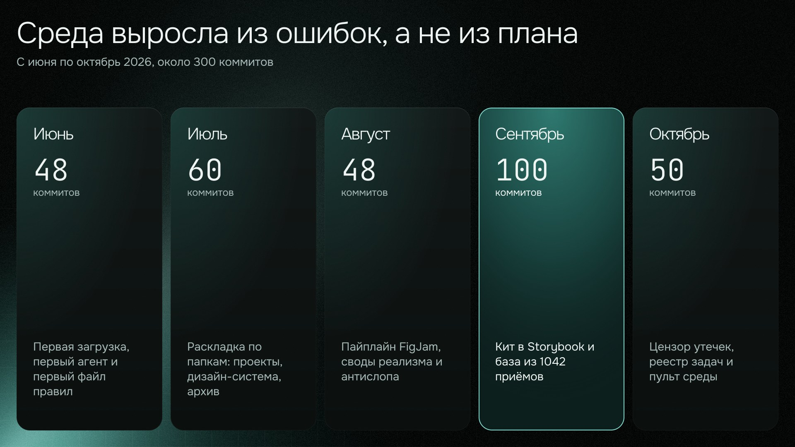
Как задача проходит через среду
- 01Свод читается до работыУ каждого контура свой: реализм, отступы по сетке 4/8, антислоп, 39 правил интерфейсов с ИИ, правила флоу в Figma.
- 02Три подхода и выборПеред сборкой узла интерфейса агент предъявляет три рабочих решения из базы референсов, у каждого назван размен, и объясняет выбор.
- 03Сборка из настоящих компонентовПрототип собирается на ките дизайн-системы в Storybook, макет в Figma инстансами библиотеки, а не нарисованными похожими блоками.
- 04Самопроверка до слова «готово»Рендер и скриншот, аудит отступов, деслоп, детектор наложений в Figma. Успешный ответ инструмента ещё не значит, что получилось задуманное.
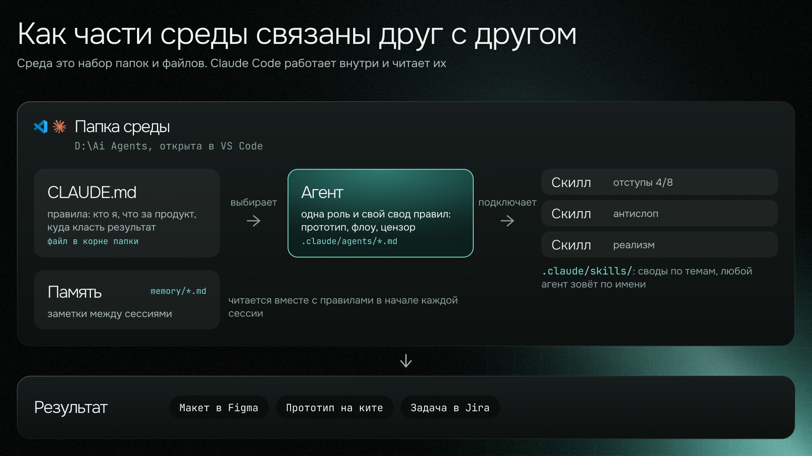
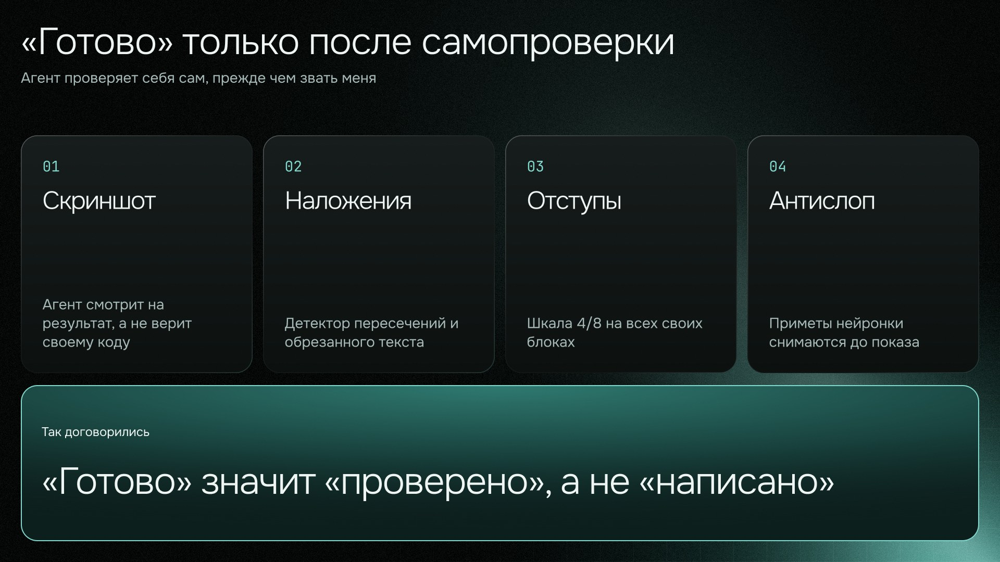
Агенты по контурам
Контуры различаются только сводом и способом самопроверки, маршрут у всех один: прочитать свод, собрать, проверить себя, положить по правилу.
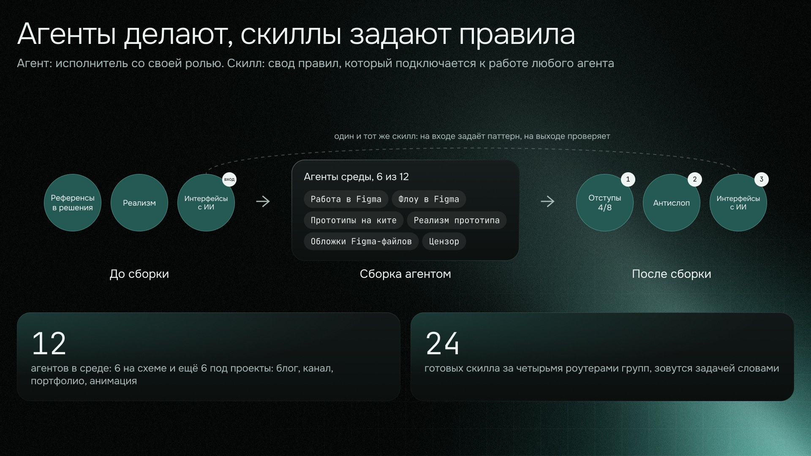
Своды и скиллы
Свод это файл правил, скилл подключает его по имени. Восемь своих скиллов зовутся напрямую, внешние паки спрятаны за четырьмя роутерами групп, чтобы не засорять выбор. Новый скилл ставится только по протоколу онбординга, а не закидывается в папку как есть.
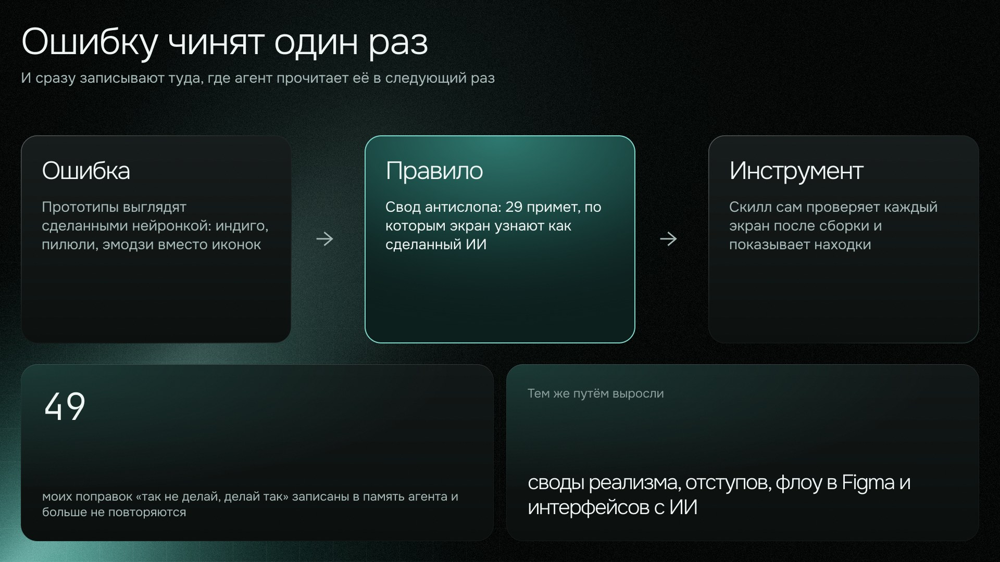
Дизайн-система и кит
Одна дизайн-система, два пути сборки. Макет в Figma собирается по индексу библиотеки инстансами компонентов, HTML-прототип собирается на ките с настоящими React-компонентами, токенами, шрифтами и иконками набора. Разметку компонентов руками агенты не повторяют: она разъезжается с китом на первом же обновлении.
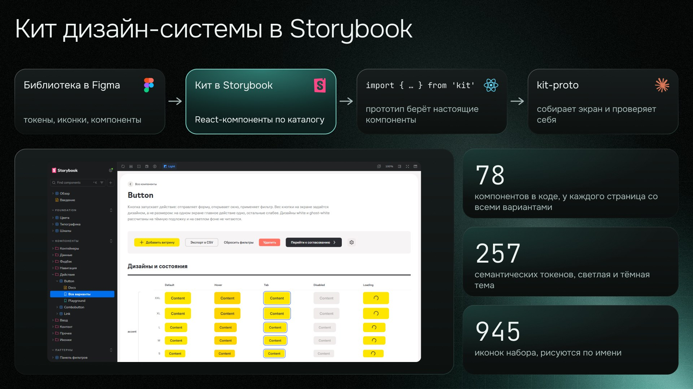
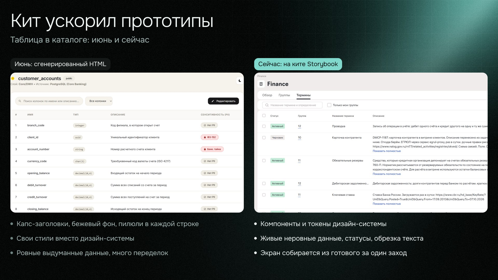
База референсов
1042 приёма с 930 живых экранов, у каждого записана граница: когда приём не работает. Поверх базы собран репертуар из 64 подходов к 11 узлам интерфейса: строка реестра, шапка объекта, панель отбора, пустое состояние и другие. База отвечает, как в жизни делают деталь, а репертуар отвечает, какими способами вообще собирают узел.
Пайплайн проектирования
Бриф, JTBD, карта историй, OOUX и пользовательские сценарии. Агент ведёт по этапам, задаёт вопросы простым языком и рисует артефакты на FigJam-доске. Пайплайн помог командам банка собирать артефакты без дизайнерского опыта, подробнее в кейсе Service E.
Простым языком, без методологии
Артефакт этапа в markdown
Править текст дёшево
FigJam, единое оформление
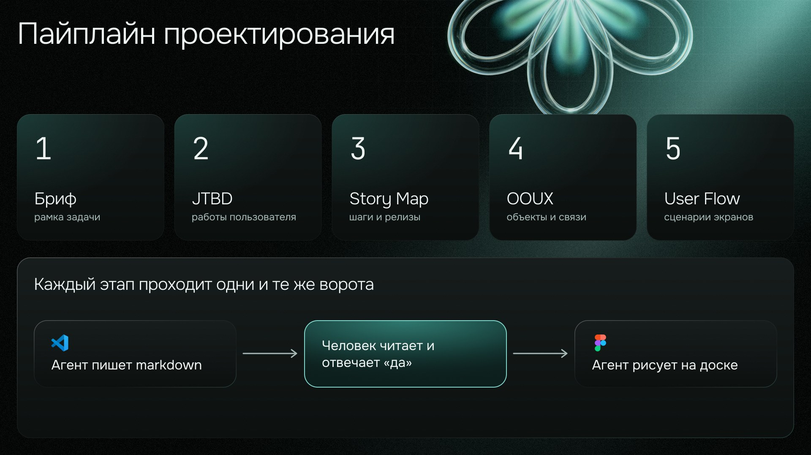
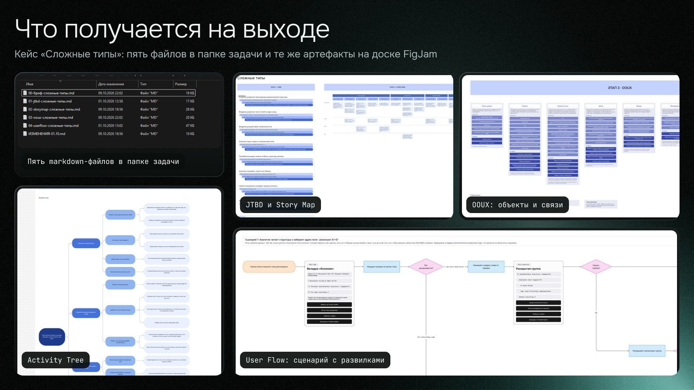
Результат
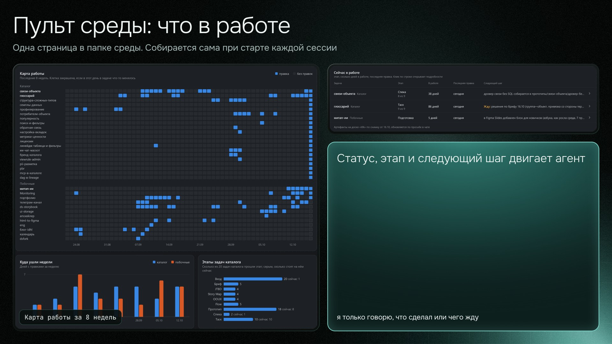
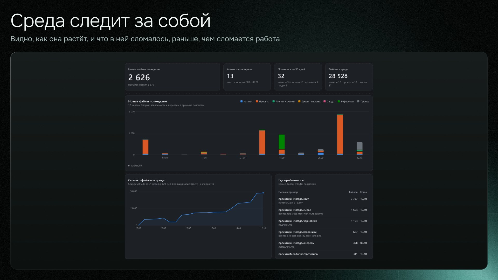
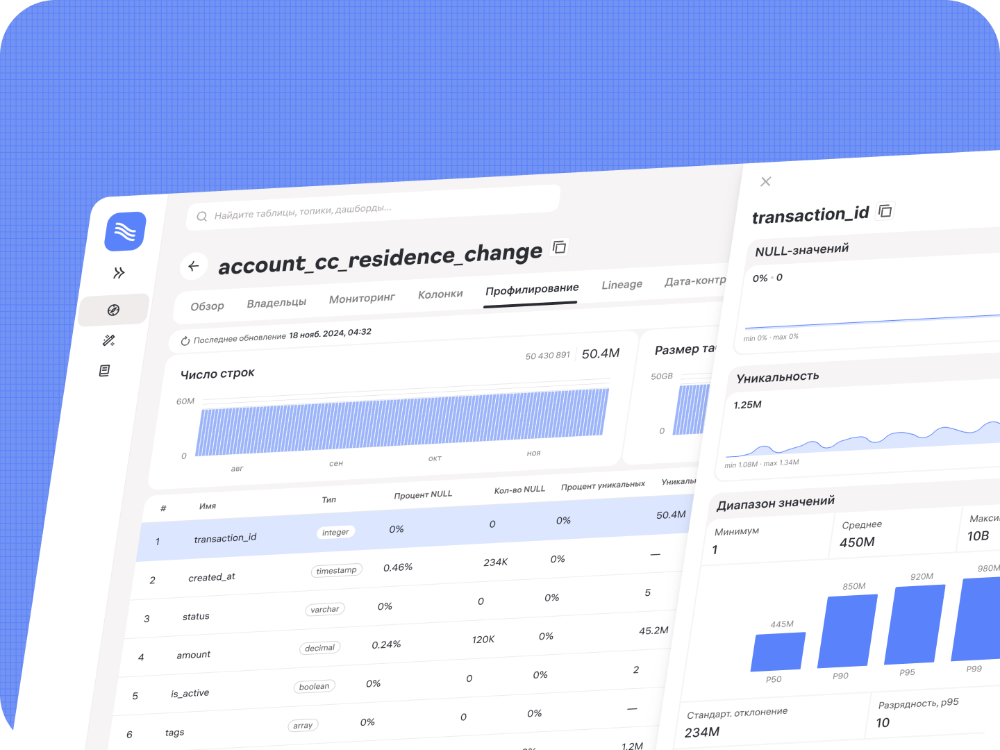